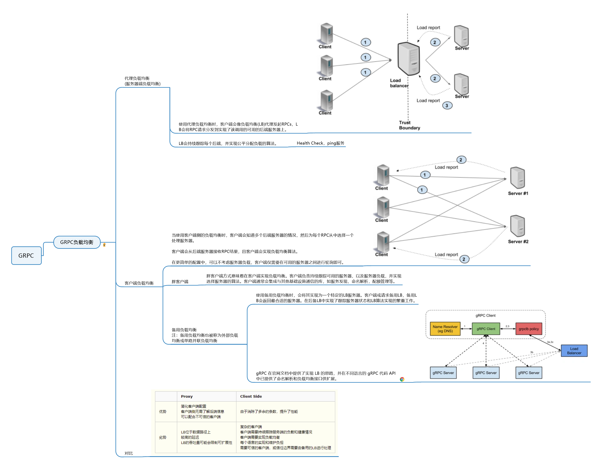
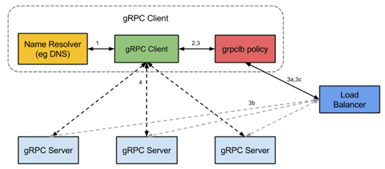
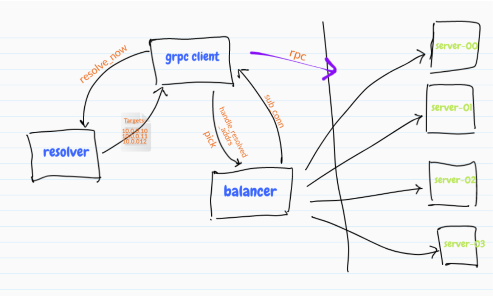

gRPC负载均衡
服务内部访问中，负载被均匀地分发给所有的后端服务，在任何时刻，最忙和最不忙的节点永远消耗同样数量的CPU。负载均衡（Load Balancing）是微服务可用性比较重要的一个技术，其目标：
-
均衡的流量分发。
-
可靠的识别异常节点。
-
scale-out，增加同质节点扩容。
-
减少错误，提高可用性。
一般我们选择后端通信协议为gRPC。
为什么使用gRPC
gRPC是一个先进的RPC协议，它是基于HTTP/2实现的。HTTP/2是一个7层协议，运行在TCP协议之上。相比传统的HTTP/REST/JSON机制，gRPC有很多优点，如：
- 它使用了二进制协议(HTTP/2)
- 在一个连接(HTTP/2)上复用多个请求
- 头部压缩(HTTP/2)
- 强类型服务和消息定义(Protobuf)
- 为多种语言实现了常用的客户端/服务器库
此外，gRPC无缝集成了如服务发现，命名解析，负载均衡，追踪和监控等生态组件。
负载均衡的分类介绍

关于gRPC内置方案的介绍：
https://github.com/grpc/grpc/blob/master/doc/load-balancing.md
中文类的博客：
https://pandaychen.github.io/2019/07/11/GRPC-SERVICE-DISCOVERY/
gRPC 内置的方案
gRPC 的内置方案如下图所示：

gRPC 在官网文档中提供了实现 LB 的思路，并在不同语言的 gRPC 代码 API 中已提供了命名解析和负载均衡接口供扩展。默认提供了 DNS-resolver 的实现，接口相当规范，实现起来也不复杂，只需要实现服务注册（Registry）和服务监听 + 解析（Watcher+Resolver）的逻辑就行了，这里简单介绍其基本实现过程：
- 构建注册中心，这里注册中心一般要求具备分布式一致性（满足 CAP 定理的 AP 或 CP）的高可用的组件集群，如 Zookeeper、Consul、Etcd 等
- 构建 gRPC 服务端的注册逻辑，服务启动后定时向注册中心注册自身的关键信息（一般开启新的 groutine 来完成），至少包含 IP 和端口，其他可选信息，如自身的负载信息（CPU 和 Memory）、当前实时连接数等，这些辅助信息有助于帮助系统更好的执行 LB 算法
- gRPC 客户端向注册中心发出服务解析请求，注册中心将请求中关联的所有服务的信息返回给 gRPC 客户端，客户端与所有在线的服务建立起 HTTP2 长连接
- gRPC 客户端发起 RPC 调用，根据 LB 均衡器中实现的负载均衡策略（gRPC 中默认提供的算法是 RoundRobin），选择其中一 HTTP2 长连接进行通信，即 LB 策略决定哪个子通道 - 即哪个 gRPC 服务器将接收请求
gRPC 负载均衡的运行机制
gRPC 提供了负载均衡实现的用户侧接口，我们可以非常方便的定制化业务的负载均衡策略，为了理解 gRPC 的负载均衡的实现机制，后续博客中我会分析下 gRPC 实现负载均衡的代码。

- Resolver
- 解析器，用于从注册中心实时获取当前服务端的列表，同步发送给 Balancer
- Balancer
- 平衡器，一是接收从 Resolver 发送的服务端列表，建立并维护（长）连接状态；二是每次当 Client 发起 Rpc 调用时，按照一定算法从连接池中选择一个连接进行 Rpc 调用
- Register
- 注册，用于服务端初始化和在线时，将自己信息上报到注册中心，主要信息有 Ip，端口等
负载均衡的算法及实现
在实践中，如何选取负载均衡策略是一个很有趣的话题，例如 Nginx 的 upstream 机制中就有很多经典的 LB 策略，如带权重的轮询 Weight-RoundRobin，一般常用的负载均衡方法有如下几种：
- RoundRobin（轮询）
- Weight-RoundRobin（加权轮询）
- 不同的后端服务器可能机器的配置和当前系统的负载并不相同，因此它们的抗压能力也不相同。给配置高、负载低的机器配置更高的权重，而配置低、负载高的机器，给其分配较低的权重，降低其系统负载，加权轮询能很好地处理这一问题，并将请求顺序且按照权重分配到后端。
- Random（随机）
- Weight-Random（加权随机）
- 通过系统的随机算法，根据后端服务器的列表随机选取其中的一台服务器进行访问
- 源地址哈希法
- 源地址哈希的思想是根据获取客户端的 IP 地址，通过哈希函数计算得到的一个数值，用该数值对服务器列表的大小进行取模运算，得到的结果便是客服端要访问服务器的序号。采用源地址哈希法进行负载均衡，同一 IP 地址的客户端，当后端服务器列表不变时，它每次都会映射到同一台后端服务器进行访问
- 最小连接数法
- 最小连接数算法比较灵活和智能，由于后端服务器的配置不尽相同，对于请求的处理有快有慢，它是根据后端服务器当前的连接情况，动态地选取其中当前积压连接数最少的一台服务器来处理当前的请求，尽可能地提高后端服务的利用效率，将负责合理地分流到每一台服务器
- 一致性哈希算法
- 常见的是
Ketama算法，该算法是用来解决cache失效导致的缓存穿透的问题的，当然也可以适用于 gRPC 长连接的场景
- 常见的是
负载均衡存在的问题
发现在 backend 之间的 load 差异比较大：
-
每个请求的处理成本不同。
-
物理机环境的差异 :
-
服务器很难强同质性。
-
存在共享资源争用（内存缓存、带宽、IO等）。
-
所以负载均衡的算法都是为了有效的考虑：负载+可用性。
这里我后期比较需要去了解的p2c算法，这个算法在kratos、go-zero以及Netflix中都有实现，且也是在基于gRPC这套接口实现。
近期又学习到了有界负载均衡（consistent-hashing-with-bounded-loads），是谷歌推出的一种在一致性哈希算法的改良。
p2c是随机选两个server，根据cpu/mem等其他参考指标打分，选择分数高的。有界哈希则是限制一个最大负载，选择节点的时候，达到负载的节点将被跳过，转移到其他节点上。
当然，其在考量上，没有考虑到实际server的压力，仅通过请求负载来判断，没有p2c从server上的考量，但其终究只是一种一致性哈希算法的升级。
本文标题：gRPC负载均衡
文章作者：小师
发布时间：2021-08-29
最后更新：2022-05-04
原始链接：chunlife.top/2021/08/29/学习gRPC负载均衡/
版权声明：本站所有文章均采用知识共享署名4.0国际许可协议进行许可